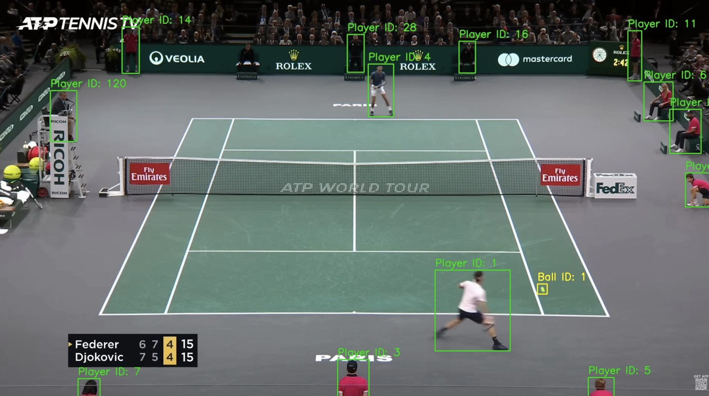
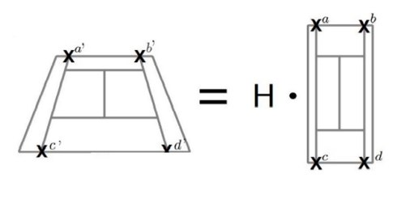

Computer vision · Python, PyTorch, OpenCV
I wanted to see how far you could get with nothing but broadcast footage. This pipeline takes ordinary TV tennis and returns real-world numbers — where each player is on court, how fast they're moving, how quickly the ball is travelling — with no data feed and no second camera.
Design and implementation are my own, with some code reused from Abdullah Tarek's tennis analysis course, which I worked through first.
Download the clip if it does not play inline. Final rendered output, 9.6 seconds of a Federer–Djokovic rally in Paris. Red dots are the 14 regressed court keypoints, the panel on the left carries live and running-average speeds, and the mini-court top right places both players and the ball in real-world coordinates.
Step one · detection and tracking
Players come from YOLO11 with tracking attached, so each detection carries an ID that persists across frames. The ball needed its own model — it's small, fast and motion-blurred, and a general-purpose detector misses it constantly — so I trained a custom YOLO model on a Roboflow tennis-ball dataset — 428 labelled images with 100 held out for validation, 100 epochs at 640px, AdamW selected automatically, with light augmentation for blur, greyscale and contrast. Even then it drops frames mid-flight, so detections are interpolated across the gaps to give a continuous trajectory rather than a stuttering one.
YOLO11l, 25.3M parameters, 640px input.
428 training images, 100 validation, from a Roboflow tennis-ball set.
100 epochs, AdamW, blur / greyscale / CLAHE augmentation.
Measured on the 100-image validation split, 101 ball instances.
Those four numbers describe a specific kind of model, and the gap between them is the interesting part. Precision of 0.96 against recall of 0.79 means that when it calls something a ball it is almost always right, but it misses roughly one ball in five. That is the direct justification for the interpolation step — the detector's failure mode is dropping frames, not inventing balls, which is exactly the failure you can fill in afterwards.
The drop from 0.884 at mAP50 to 0.395 at mAP50-95 is characteristic of very small objects. Finding the ball is largely solved; drawing a box around it that agrees with the ground truth at strict IoU thresholds is much harder when the target is a handful of pixels wide and motion-blurred. For this pipeline that matters less than it looks, since the ball's position feeds a homography as a single point rather than needing a precise box.
Detections are cached to tracker_stubs/ after the first run, so iterating on the rendering or the statistics doesn't mean re-detecting the whole video every time.

Raw detector output, before any filtering. This is the honest version of "player tracking": the model finds the umpire, the line judges, the ball kids and several spectators alongside the two people actually playing.
That frame is the reason the pipeline needs a filtering step at all. My first attempt picked the two detections closest to a single nearest court keypoint, which reliably chose an official standing by the net post over a player positioned centrally. Taking the mean distance across all 14 keypoints instead selects for being on the court rather than near one corner of it, which is what actually distinguishes a player from an umpire.
Tracking IDs are also arbitrary — the tracker returned 1 and 4 in the frame above, not the 1 and 2 I'd assumed — so the real IDs are derived once from the filtered detections and mapped to fixed internal labels before any statistics are calculated.
Step two · court calibration
To convert anything into real-world units I first need to know where the court sits in the frame. That's a regression problem: given a single image, predict the pixel coordinates of 14 known landmarks — the four corners, the service line intersections, the centre marks.
I used ResNet50 with transfer learning, replacing the classification head with a regression head that outputs 28 numbers — an x and a y for each of the 14 keypoints — and fine-tuned it on labelled court images in PyTorch for 20 epochs. Images are resized to a fixed 240×240 before being fed in, with the ground-truth coordinates scaled to match.
That scaling is where two of the worst bugs in the project came from, both covered further down: a mismatch between the resize dimension and the divisor used in the coordinate maths, and a missing model.eval() that left BatchNorm running on single-image statistics at inference time. Neither crashed. Both quietly moved every keypoint.
Step three · geometry
Broadcast footage gives you one angled, moving view of a court. Every measurement worth having — distance covered, movement speed, shot speed — lives in real-world coordinates, so the hard part isn't detection at all. It's recovering the mapping between what the camera sees and the court as it actually is.
A tennis court is a known, fixed, published rectangle. The camera sees that rectangle as a trapezoid. The transformation between the two is a homography — a 3×3 matrix H that maps any point in the image plane to its position on the real court, and the 14 detected keypoints give more than enough correspondences to solve for it.

Four corresponding points are the minimum needed to solve for H. Using all 14 keypoints makes the fit more robust to any single one being predicted badly.
Player height serves as a second calibration reference. Once H exists, every tracked position becomes a coordinate in metres, and speed is just coordinates and elapsed time — which is also why the frame-rate bug described below was so damaging.
YOLO11 with tracking IDs; custom YOLO for the ball, interpolated across gaps.
Officials and ball kids discarded by mean distance to all 14 keypoints.
ResNet50 regression head predicts court landmarks per frame.
Pixels to metres using known court dimensions and player height.
Downstream of the mapping: shot detection, speed calculation, then rendering — boxes, names, mini-court, stat panel and fading shot-speed tags.
Debugging log
A pipeline like this fails in two ways. Some bugs throw an exception and announce themselves. The dangerous ones hand you numbers that look completely reasonable and are wrong. Telling one from the other was most of the work.
My speed calculations converted frame counts to seconds using a hardcoded 24 fps. The footage was 60 fps. Nothing crashed, nothing warned me — the pipeline just produced shot speeds that were plausible, internally consistent and silently deflated by about 2.5×.
I only caught it by sanity-checking the output against what a professional rally should actually look like. The fix was one line — read the frame rate from the video file instead of assuming it — but it's the reason I now treat any hardcoded constant near a unit conversion as a defect until proven otherwise.
The rest, grouped by what caused them:
Two resize constants that disagreed. Training resized images to 240×240 while my coordinate-scaling maths divided by 224, so every predicted keypoint landed in the wrong place. The ground-truth labels had been scaled with the same error, which meant retraining rather than a patch.
Inference left in training mode. I'd forgotten model.eval(), so BatchNorm was using single-image statistics instead of its running estimates and the keypoints drifted. Fixable without retraining, but invisible until I compared predictions frame to frame.
Overlays silently discarded. Several drawing calls chained off the original frame list rather than the previous step's output, so each new overlay wiped the last. Player boxes vanished the moment ball boxes were drawn, and mini-court dots never appeared because the court background had never made it onto that frame.
A colour conversion with too wide a blast radius. A leftover cv2.COLOR_BGR2RGB call inside the mini-court drawer flipped channels across the whole frame rather than just the mini-court box, corrupting ball and keypoint colours everywhere downstream.
The system kept tracking the umpire. My player filter originally picked whoever stood closest to a single nearest court keypoint, which favoured an official beside the net post over a player standing centrally. I replaced it with mean distance across all 14 keypoints, which selects for being on the court rather than near one corner of it.
Hardcoded track IDs. The stats pipeline assumed the tracker would hand back IDs 1 and 2. It actually assigned 1 and 4, which threw KeyErrors across height lookups, opponent-speed calculations and the stats dictionary. I now derive the real IDs once from the filtered detections and map them to fixed internal labels.
British and American spellings, mixed. Repeated AttributeErrors from metres against meters, _METERS against _METRES, ALLY against ALLEY. Each one trivial, but often enough that it was a pattern rather than a run of typos. I now fix a spelling convention at the start of a project instead of at every call site.
A dataset that pointed at nothing. The extracted Roboflow archive produced a duplicated nested directory, so the relative paths in data.yaml resolved to empty folders and training happily ran on no data at all.
Known limitations
Built with
Match footage from ATP Tennis TV, used for technical demonstration only. All rights remain with the original holders.